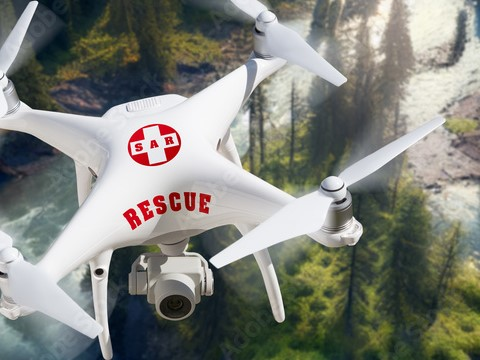

Drone-based aerial mapping presents a groundbreaking approach to capturing highly detailed, precise, and current images of our surroundings. Drones offer a rapid and efficient means of mapping vast areas, making them ideal for a wide range of mapping applications, including land surveying, agriculture, construction, and environmental monitoring. By using a drone, you can easily acquire high-resolution imagery and generate accurate 3D models, maps, and surveys that provide valuable insights and enable you to make more informed decisions. Whether you're a professional surveyor, farmer, construction worker, or simply an explorer seeking a new perspective, a drone is an essential tool that can enhance your mapping and surveying endeavors. Investing in a drone for aerial mapping not only makes sense for your business or personal projects, but it also offers an exciting and innovative way to view the world around you. So, why wait? Get a drone today and discover the world like never before.
The mining and quarrying industries employ drone aerial mapping as a robust technique to generate precise and current maps of their mining sites. With the use of drones that have advanced cameras, businesses can gather information swiftly and securely to build 3D representations of their operations. This approach facilitates better planning, monitoring, and management of the site, resulting in heightened productivity and reduced expenses.
Drone aerial mapping is a useful resource in the construction and survey industries to survey land and construct comprehensive maps and models of construction sites. With the aid of drones having advanced sensors and cameras, construction professionals and surveyors can acquire data rapidly and precisely to design detailed 3D models of the landscape and buildings

Drone aerial mapping is utilized in the agriculture sector for creating precise maps and monitoring the health of crops. Drones come equipped with advanced sensors and cameras that can capture high-quality images and data pertaining to plant health, moisture levels, and various other factors that impact crop growth. This data is employed to generate comprehensive maps of farmland, enabling farmers to pinpoint areas that need special attention and optimize crop production
The solar energy industry utilizes drone aerial mapping for surveying and planning solar power systems. Drones are integrated with specific sensors and cameras that can capture comprehensive images and data on the landscape, such as elevation, slope, and shading. This data can be employed to generate precise 3D models of the location, empowering solar energy professionals to enhance the design and positioning of solar panels for optimal efficiency
The oil and gas sector leverages drone aerial mapping for inspecting and monitoring pipelines and for surveying and mapping exploration sites. Drones come with specialized sensors and cameras that can capture detailed images and data of pipeline infrastructure, including possible leaks and other concerns
The use of specialized cameras and sensors on drones can capture aerial imagery and data, which can be utilized to produce 3D models. Photogrammetry software processes the collected data, integrating algorithms to knit together the images and data and generating an elaborate 3D model of the object or area of interest, this digital replica that can be examined and analyzed from various angles and perspectives
Drone aerial mapping is deployed in the railroad sector for track inspection and maintenance. Drones incorporating LiDAR sensors and high-resolution cameras will take detailed images and data on the state of railway lines, including any potential flaws or damage. The likelihood of derailments and other safety risks can be mitigated by using this information to detect and prioritize repair needs
In order to map and record historical locations and relics, drone technology is growing ever more prominent in archaeology. In-depth aerial footage and data of ancient sites can be captured via drones with high-resolution cameras and LiDAR sensors, enabling more effective and efficient mapping and documentation. Drones can access isolated locations that would otherwise demand expensive and labor-intensive physical labor.
To ensure efficient management and upkeep of water resources, the use of drone technology for dam and river mapping is on the rise. With high-resolution cameras and LiDAR sensors, drones can capture precise aerial footage and data of water bodies, dams, and neighboring regions, facilitating improved mapping and monitoring. Drones can access hard-to-reach areas, rendering the operation cost-effective compared to alternative means